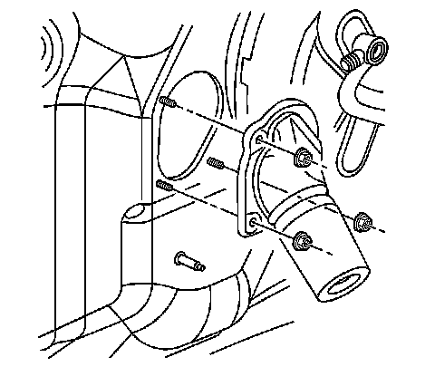

Intermediate Steering Shaft Seal Replacement
Intermediate Steering Shaft Seal Replacement
Removal Procedure

1. Disconnect the lower intermediate shaft from the upper intermediate shaft.
2. Remove the nuts from the studs.
3. Remove the seal from the vehicle.
Installation Procedure
1. Install the seal to the vehicle.
Notice: Refer to Fastener Notice.
2. Install the nuts to the studs.
Tighten the nuts to 3 N.m (27 lb in).
3. Connect the lower intermediate shaft to the upper intermediate shaft.